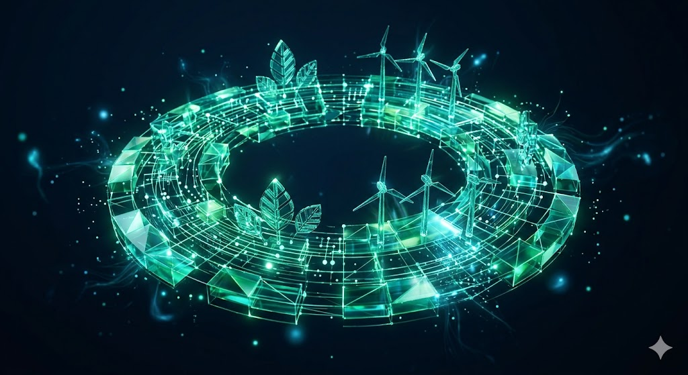
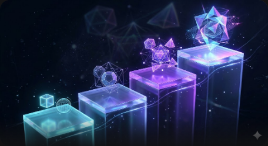
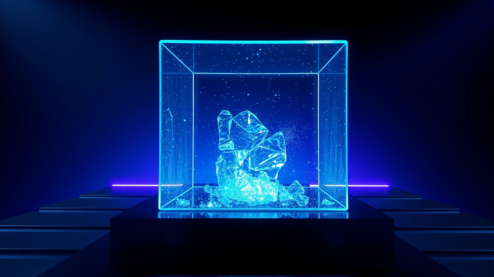
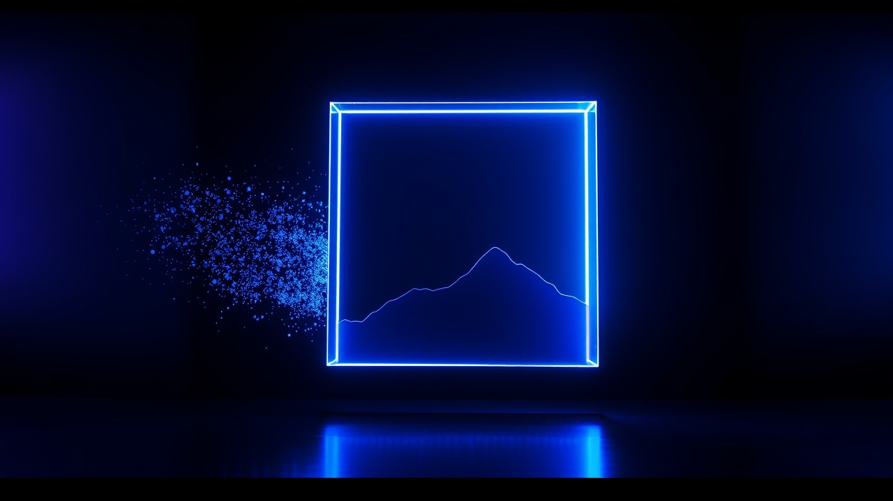
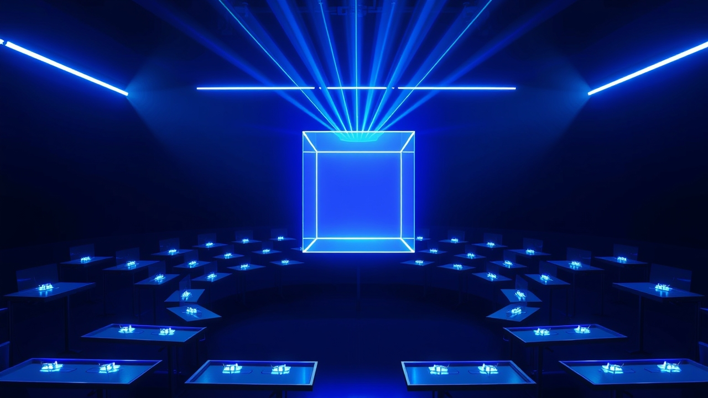
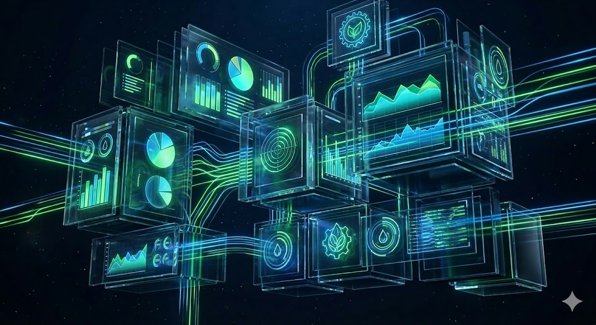

運行中的專案
站上陳列的每一件，都是每天在運轉的工作系統。
教育課程
從理解機制開始的 AI 課程，不需要程式背景，但需要理解每一步的邏輯。
AI 100 講
運行中十個模組、一百講的 AI 應用課程，把 iPAS AI 應用規劃師的知識體系變成可以每天聽的中文 Podcast
進入課程
永續 100 講
運行中涵蓋淨零碳排、ESG、碳交易十大主題的永續知識系列，AI 驅動的內容生產流程本身就是示範
進入課程
AI 學習路徑
運行中從零到能動手的 Vibe Coding 三階段路徑，每一階段都以做出真實作品收尾
查看路徑YOLO 視覺辨識課
運行中用真實場景資料訓練自己的物件辨識模型，從標註到部署完整走一遍
進入課程WELL AP 學習站
運行中考古題解析、題庫練習、講義整合的 WELL AP 認證學習系統
進入學習站知識庫系統
讓領域知識自己被找到——每天自動更新、可追溯來源的知識系統。
研究工具
把研究流程轉譯成 AI 可以參與的形式，從題目發想到論文投稿。

PaperLab 寫論文找方法
運行中從模糊想法收斂成研究計畫，再交給自動化 pipeline 跑完實驗與初稿的論文生產系統
進入 PaperLab
Living World Model
建置中研究型專案，建置中
AI 基礎設施
支撐所有專案運轉的底層服務，也是課堂上示範的真實系統。

FluxGate
運行中建立在 Cloudflare Workers 上的非同步生圖服務，提交即回、輪詢取件
查看服務
ClassClaw
運行中一支 QR code 就能開始的課堂即時互動系統，即將開源
查看系統會議紀錄工作室
建置中從錄音到結構化會議紀錄的自動化流程，建置中
資料應用
把公開資料變成可以直接使用的工具。
法拍物件地圖
運行中整合全台 22 間法院公告的法拍屋即時地圖，公開資料變成可以直接用的查詢工具
開啟地圖
永續決策平台
運行中把永續數據整理成可以支撐決策的視覺化平台
進入平台電力資料應用
建置中台電公開資料的分析與應用，建置中